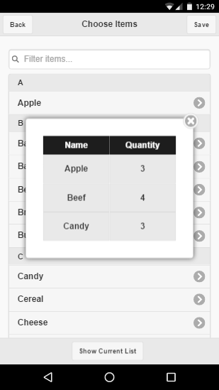
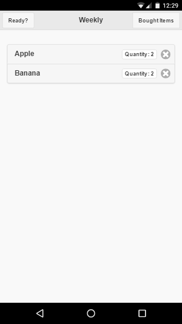
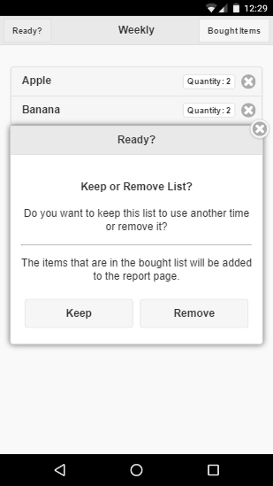
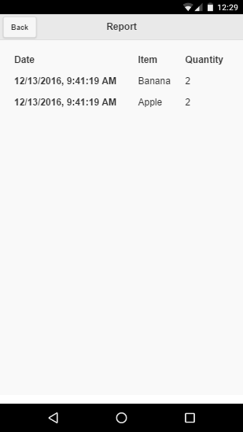
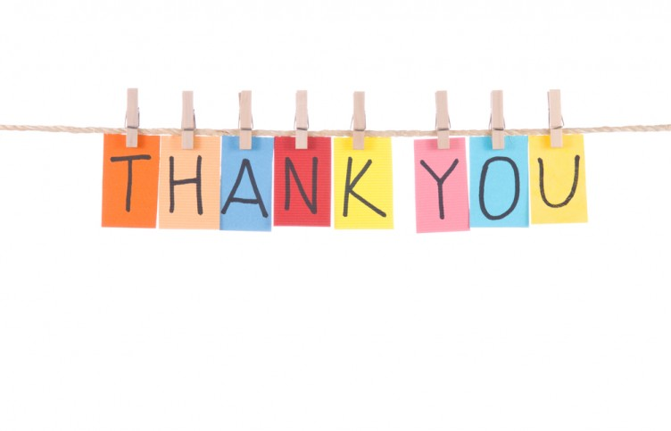

Choose the Create a Shopping List from the main menu. In the next screen you will see a list of ordinary shopping items which can be added to the list. You can type in the search bar or scroll up and down and choose one which will take you to the next screen. From here select the quantity wanted for that item and click Add Item button to add it to the current list. This can be repeated until your shopping list has been finished. At the bottom of the screen there is a footer which contains the Show Current List button, which will retrieve the current items from the list, as shown in the image below.
When ready from selecting all the items click the save button. Where a popup will ask you to name your list. Enter your desired name and click Save if you are ready. Please note that the app will not let you save the list if no name has been inputted or if the name is already in use for another list. Also please note that if the back button is pressed, a popup will ask you whether you want to leave the current list. This will erase all the items in the list and you will have to start again
When you go shopping press the Shopping Lists to access all the lists that you have previously saved. A list of all the shopping lists will be presented to you. Choose one of them. Whne you enter the shopping list, you will see a screen similar to the image below.
From here every item you will click will be send to the bought items list. To view the bought items you have to click the Bought Items button at the top. If an item is clicked by mistake this can be removed from the bought list by clicking on it. When you are ready press the Ready button at the top which will present you a popup as shown in the image below.
This popup asks you whether you want to keep the list for use for another time or whether you want to remove it. Please note that if removed the list cannot be retrieved. If the list is kept all the items in the bought list will be moved back to the shopping list. Moreover, in both cases, the items found in the bought list will be saved so that they can be viewed later in the report page.
From the main menu you can click the Report item which will take you to a page which will show you a history of the items bought, including the date and time, item name and quantity. An example is shown in the image below.
 